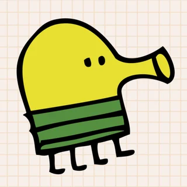

CLASSIC HTML5 EDITION
握稳手机后开始，轻轻左右倾斜即可。
涂鸦跳跃
左右倾斜手机，踩着平台一直往上跳。
捡到火箭背包，一飞冲天！
握稳手机后开始，轻轻左右倾斜即可。
已暂停
握稳手机，继续时会重新校准。
自动起跳 · 倾斜转向 · 点击画面射击
感应不能用时，按住左右键也能玩。踩弹簧跳得更高，注意怪物和断裂平台。

左右倾斜手机，踩着平台一直往上跳。
捡到火箭背包，一飞冲天！
握稳手机，继续时会重新校准。
感应不能用时，按住左右键也能玩。踩弹簧跳得更高，注意怪物和断裂平台。